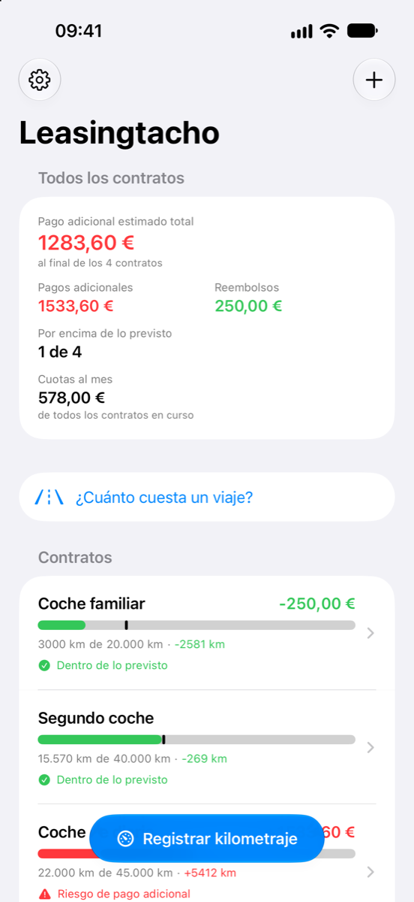
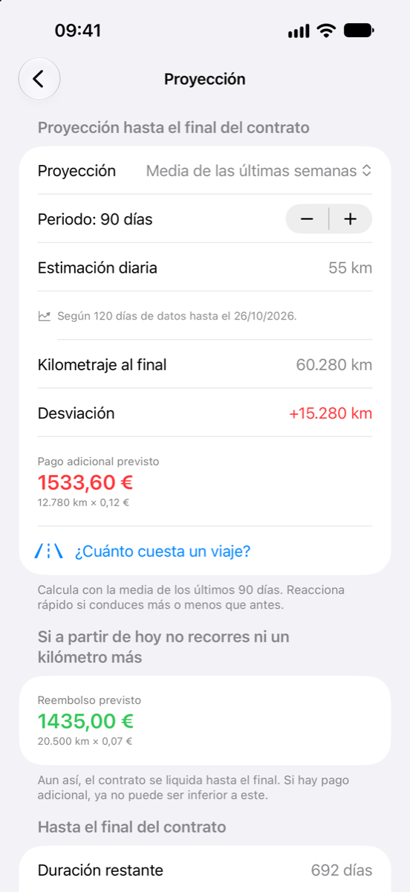
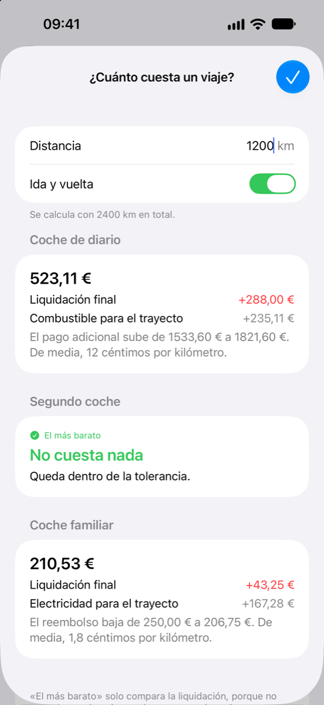
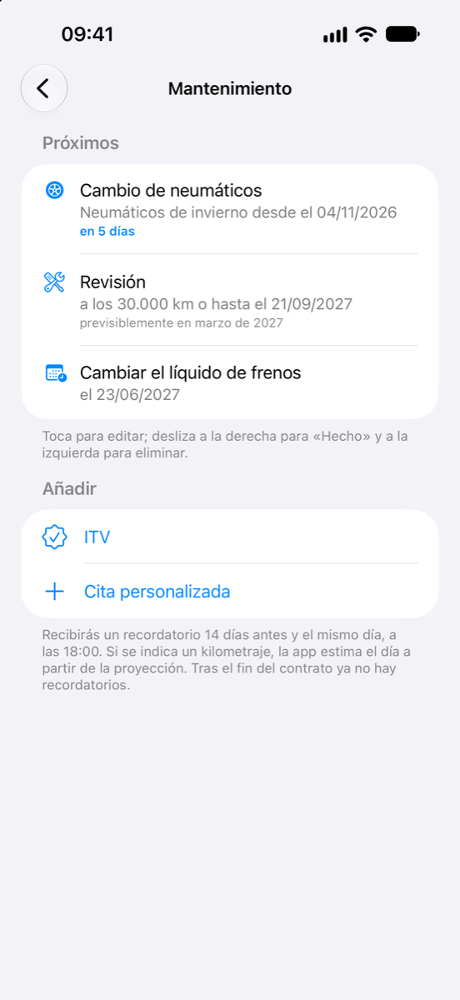
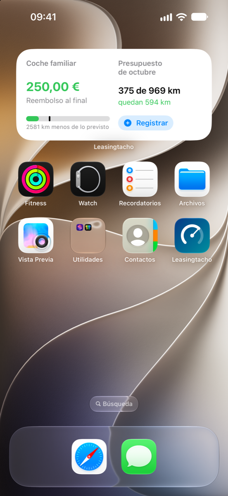
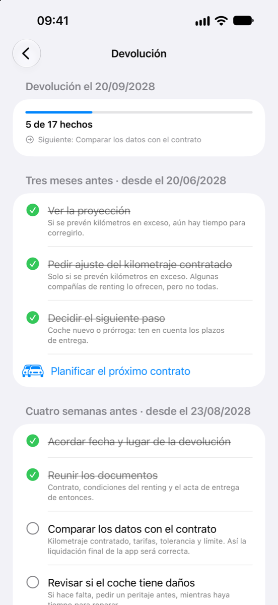
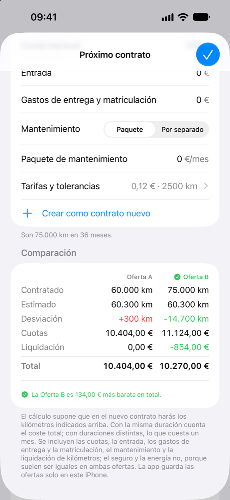
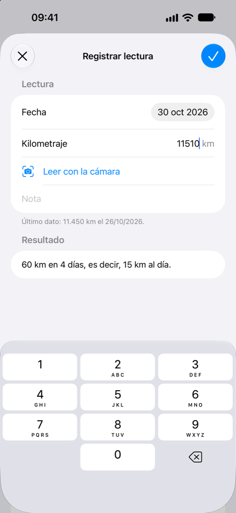
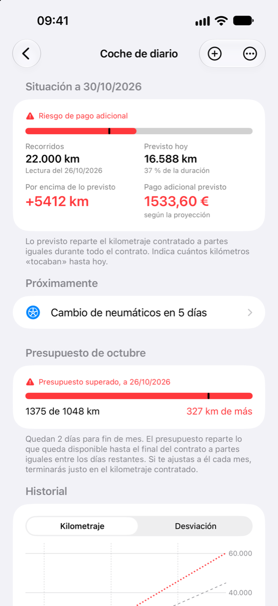

Lo que hace la app
En un renting para particulares, los kilómetros se liquidan al fin del contrato: el exceso de kilometraje se paga y, en muchos contratos, los kilómetros no recorridos se reembolsan. Leasingtacho te muestra desde ya hacia dónde vas.
Analizar
-
Tu situación de un vistazo
Cuántos kilómetros has recorrido, cuántos estaban previstos a día de hoy y qué significa eso al fin del contrato: un pago adicional o un reembolso.
-
Proyección hasta el fin del contrato
Según la media de las últimas semanas, desde el inicio del contrato o según tu propia estimación anual. Y el cálculo para el caso de que desde hoy no sumes ni un kilómetro más.
-
¿Cuánto cuesta este viaje?
Introduce una distancia, por ejemplo la de las vacaciones, y mira lo que te costará al fin del contrato: más pago adicional, menos reembolso o nada en absoluto mientras quede dentro del margen de tolerancia. Y, además, la electricidad o el combustible del viaje. Si tienes varios coches, la app te dice con cuál sale más barato.
-
Presupuesto del mes
Cuántos kilómetros puedes hacer este mes, cuántos llevas ya y cuántos te quedan, repartidos para que llegues justo al kilometraje contratado.
-
¿Cuánto te cuesta de verdad tu coche?
Introduce la cuota, la entrada y los gastos de entrega; además, el seguro o el mantenimiento si no van incluidos en la cuota, ayudas o tus propias partidas, al mes, al año o una sola vez. Con el consumo y el precio, la app calcula también la electricidad o el combustible hasta el fin del contrato. Suma el coste total de todo el contrato, con el pago adicional o el reembolso esperado, separado en renting, energía, mantenimiento y gastos corrientes, al mes y por kilómetro recorrido. Lo que te ha costado una revisión lo anotas al marcarla como hecha. La pantalla de inicio reúne las cuotas de todos tus coches.
-
Calcula como tu contrato
Las tarifas por kilómetro en exceso y por kilómetro no recorrido, los márgenes de tolerancia y el límite de reembolso los introduces tal como figuran en el contrato. Cuando termina el contrato, la app muestra la liquidación final.
-
Historial y lecturas
Un gráfico muestra los kilómetros recorridos, lo previsto y la proyección a lo largo de todo el contrato. Las lecturas aparecen ordenadas por meses, con los kilómetros recorridos cada mes.
Registrar
-
El kilometraje con la cámara
Apunta la cámara al cuentakilómetros y toca el kilometraje, o elige una foto que ya tengas; la lectura toma entonces la fecha de la foto. La imagen se analiza solo en tu iPhone.
-
Con un toque desde la pantalla de inicio
«Registrar kilometraje» está abajo, en la pantalla de inicio de la app. Para un contrato concreto, basta con deslizar su fila hacia la derecha.
-
Siri y Atajos
«Registrar kilometraje» está disponible para Siri, Spotlight y la app Atajos. El kilometraje se guarda sin que abras la app. La acción también aparece en el menú del icono de la app.
-
Recordatorios
Para la próxima lectura, con la frecuencia que elijas, y si quieres, cuatro semanas antes del fin del contrato.
-
Widgets
Tu situación en la pantalla de inicio y en la pantalla de bloqueo, sin abrir la app. Y un control «Registrar kilometraje» para el centro de control y el botón de acción.
Gestionar
-
Todos los contratos que quieras
Cada contrato tiene su propia página, y una vista general los reúne todos.
-
El mantenimiento bajo control
Revisión, cambio de neumáticos, ITV y tus propias citas, por fecha, por kilometraje o por ambos. Si es por kilometraje, la app calcula según tu forma de conducir cuándo llegarás y te lo recuerda dos semanas antes. En cuanto marcas una cita como hecha, la siguiente ya está programada.
-
Lista de comprobación para la devolución
Lo que toca hacer tres meses, cuatro semanas y una semana antes de la devolución, el mismo día y después, con las fechas que resultan de tu fin de contrato. Puedes añadir tus propios puntos.
-
Planificar el próximo contrato
La app te muestra cuántos kilómetros haces de verdad al año y qué kilometraje contratado te conviene. Introduce dos ofertas y mira cuál sale más barata al final: cuotas, entrada, gastos de entrega y mantenimiento, más el pago adicional o el reembolso esperado. Con un toque, la oferta elegida se convierte en tu nuevo contrato.
-
Un contrato como plantilla
El próximo contrato hereda la duración, las tarifas, los márgenes de tolerancia y los recordatorios del anterior; solo introduces lo que ha cambiado.
-
Sincronización con iCloud
Los contratos y las lecturas se guardan en tu iCloud privado y así te acompañan también a un iPhone nuevo.
-
Bloqueo de la app
Si quieres, con Face ID, Touch ID o el código del dispositivo. Los widgets de la pantalla de bloqueo dejan entonces de mostrar cifras.
-
Exportar
Las lecturas en una tabla (CSV) y la situación de hoy como informe, para compartirlas o guardarlas.
-
Sin cuenta, sin publicidad, sin rastreo
Tus datos se quedan contigo. El desarrollador de la app no los ve. Más información en la política de privacidad.
Precio
Primero pruébala, después cómprala una sola vez.
- Sin suscripción
- Sin publicidad
- 4,99 € una sola vez
-
7 días de prueba gratis
Todas las funciones, sin limitaciones. La prueba termina sola, sin ningún coste.
-
Después, 4,99 € una sola vez
Una compra única dentro de la app desbloquea la versión completa, para siempre y en todos los dispositivos con tu cuenta de Apple.
-
Sin compra
Tus contratos y lecturas siguen visibles y puedes seguir exportándolos. La lista de comprobación para la devolución, los gastos y las citas de mantenimiento se pueden seguir consultando. Para registrar nuevas lecturas o nuevos contratos, calcular un viaje, planificar el próximo contrato, marcar la lista de comprobación y programar el mantenimiento necesitas la versión completa.
Este precio es válido en España; en otros países, la app te indica el importe local antes de la compra. Si ya la has comprado, recuperas la versión completa en otro dispositivo desde los ajustes de la app, con «Restaurar compras».

Preguntas y respuestas
¿Cómo funciona la prueba?
Durante 7 días puedes usar todas las funciones sin limitaciones. Al empezar la prueba, la app inicia una compra gratuita a través del App Store: no se cobra nada y no empieza ninguna suscripción.
Apple guarda la fecha en tu cuenta de Apple. Por eso la prueba vale igual en todos tus dispositivos y no vuelve a empezar si reinstalas la app.
¿Qué pasa cuando termina la prueba?
Nada que te cueste dinero. Tus contratos y lecturas siguen visibles y puedes seguir exportándolos. Para registrar nuevas lecturas o nuevos contratos, calcular viajes y planificar el próximo contrato necesitas la versión completa, una compra única dentro de la app por 4,99 €.
¿Cómo paso la versión completa a un iPhone nuevo?
La compra vale en todos los dispositivos con tu cuenta de Apple. Inicia sesión en el nuevo dispositivo con la misma cuenta de Apple y toca «Restaurar compras» en los ajustes de la app. No se cobra nada.
¿Cómo llegan mis datos a otro dispositivo?
A través de iCloud. Si en tus dispositivos has iniciado sesión con la misma cuenta de Apple e iCloud está activado para Leasingtacho, la app sincroniza sola los contratos y las lecturas, también cuando cambias a un iPhone nuevo.
Los datos quedan en tu iCloud privado; el desarrollador de la app no tiene acceso a ellos. Sin iCloud, se quedan solo en el dispositivo.
¿Cómo exporto mis datos?
Abre un contrato y desplázate hasta el apartado para compartir. Allí puedes crear un archivo CSV con todas las lecturas, que puedes abrir por ejemplo con Numbers o Excel, o un informe de texto que resume la situación de hoy.
Tú eliges adónde va el archivo en el menú de compartir. Funciona también después de la prueba, sin compra.
¿Cómo borro mis datos?
Para borrar una lectura, deslízala hacia la izquierda en la lista. Un contrato con todas sus lecturas se borra igual en la pantalla de inicio de la app, o manteniendo pulsada su fila. Con iCloud, desaparece también de tus otros dispositivos.
Para borrarlo todo, elimina la app y la copia en iCloud: Ajustes → tu nombre → iCloud → Gestionar almacenamiento → Leasingtacho.
¿La cámara reconoce siempre bien el kilometraje?
No siempre; por eso la app solo toma el número que tocas. En la medida de lo posible, ignora el cuentakilómetros parcial, la autonomía, la hora y la temperatura. Comprueba el valor antes de guardar; si hace falta, escríbelo con el teclado.
¿Leasingtacho sirve para mi renting para particulares?
Leasingtacho sirve para cualquier contrato que fije un kilometraje, por ejemplo un renting para particulares o para autónomos. Introduces el kilometraje contratado, la tarifa por kilómetro en exceso y, si los hay, el margen de tolerancia, el reembolso por kilómetro no recorrido y su límite, tal como figuran en tu contrato.
¿Y si puedo pedir un ajuste de kilometraje durante el contrato?
Algunas compañías de renting permiten cambiar el kilometraje contratado durante el contrato. La proyección te dice a tiempo cuánto te costaría el exceso de kilometraje al final, para que puedas compararlo con lo que te ofrezca tu compañía por el ajuste.
¿Los importes son vinculantes?
No. Leasingtacho calcula con los datos que pasas de tu contrato y con tus lecturas. Una proyección es una estimación basada en los kilómetros que has hecho hasta ahora. Otros gastos de la devolución, por ejemplo por daños, no se tienen en cuenta.
Toda la información se ofrece sin garantía. Lo que cuenta es la liquidación de tu compañía de renting.
¿El desarrollador de la app ve mis datos?
No. La app no envía datos al desarrollador, y no hay ni cuenta ni rastreo. Los detalles están en la política de privacidad.
¿En qué dispositivos funciona Leasingtacho?
En iPhone con iOS 18 o posterior.
Contacto
¿Una pregunta, un fallo o una idea para la próxima versión? Escribe a

Si algo falla, ayuda mucho una breve descripción de lo que hiciste y de lo que pasó, con una captura de pantalla si puedes.